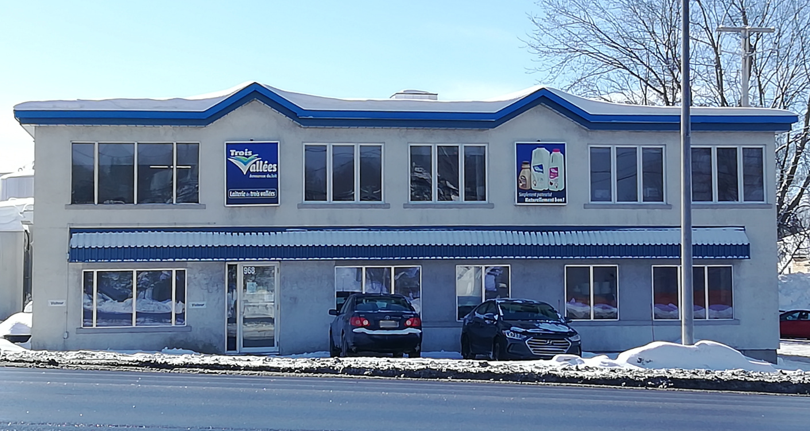
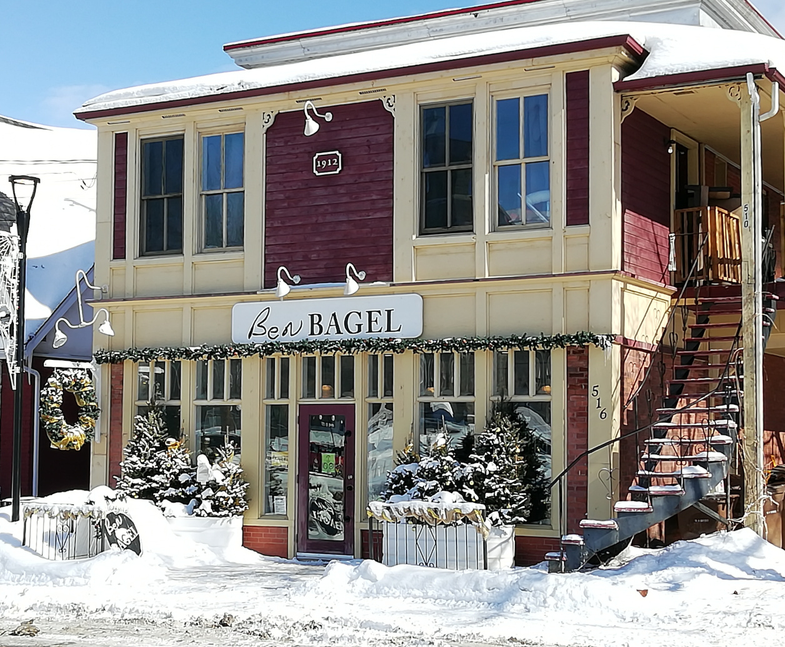

Laiterie des trois vallées
Dairy products made with local milk!
This dairy processing plant, initially a family dairy founded by Émile Bélanger, became the “Laiterie des trois vallées” decades later. Although visits to the factory are not authorized, you will find all their products in grocery stores and convenience stores in Mont-Laurier. From skimmed milk to coffee cream, including whipping and cooking cream, you will certainly find the product you need to create gourmet desserts and meals. Or you can simply enjoy the magnificent landscapes of Mont-Laurier while enjoying a delicious chocolate milk.
Les Jardins Bio du Solstice

Come and enjoy an organic and local basket!
Closed during the winter, the seeds are prepared in the spring to obtain the plants. These will be transplanted when the temperatures warm. Starting in the summer, the vegetables will be ready to be harvested and eaten. You will find fresh vegetables directly on the farm, from June to the end of October or in some corner grocery stores. Eggs are available year-round in several grocery stores and convenience stores in Mont-Laurier. You can also stock up on plants to grow at home!
Ben Bagel
Tasty bagels and baked goods as you wish!
At Ben Bagel, you will find daily fresh products made and cooked on site. These are made, as far as possible, with local products. From the counter, you can observe the oven and see the baker at work, which is sure to make your mouth water. Take a trip to Ben Bagel to discover delicious bagels, but also croissants and their tasty sandwiches, among others.